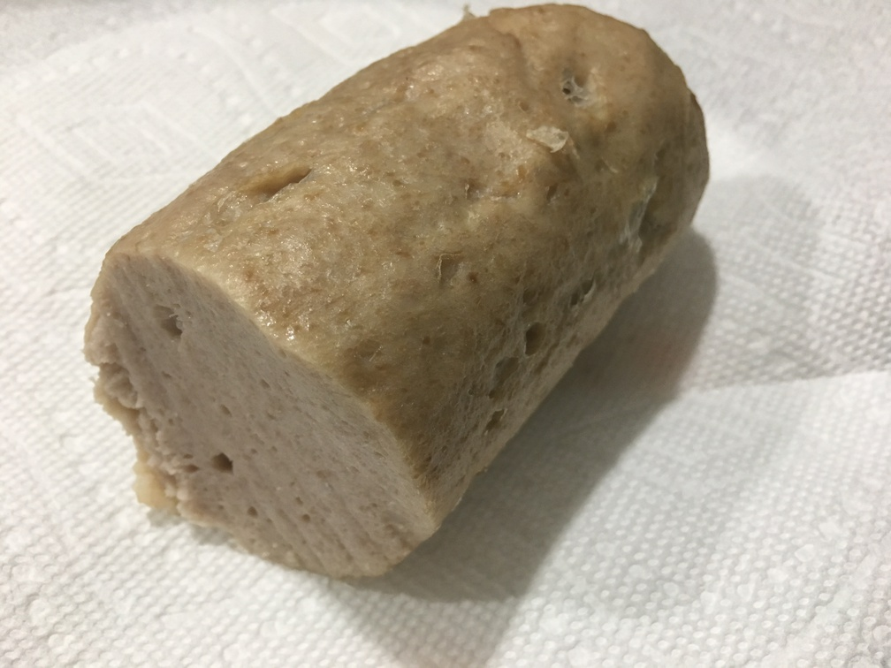

| Other | Meat | Veggie | Fruit |
|---|---|---|---|
| baking powder | pork shoulder | garlic | |
| fish sauce | shallot | ||
| msg | |||
| sugar | |||
| tapioca starch |
| instructions |
|---|
| Process 1 lb pork shoulder (partially frozen), shallots and garlic |
| Add a mixture of 1 tbsp sugar, 2 tbsp tapioca starch, 0.5 tsp baking powder, 0.5 tsp msg, 2 tbsp fish sauce, 6 tbsp ice water |
| Freeze for 10-15 min |
| Process mixture again |
| Wrap tightly into a roll using parchment paper |
| Steam over medium heat until internal temperature 165F (~25 min) |